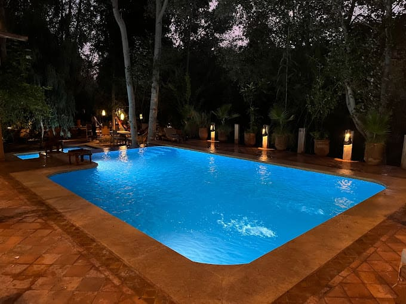
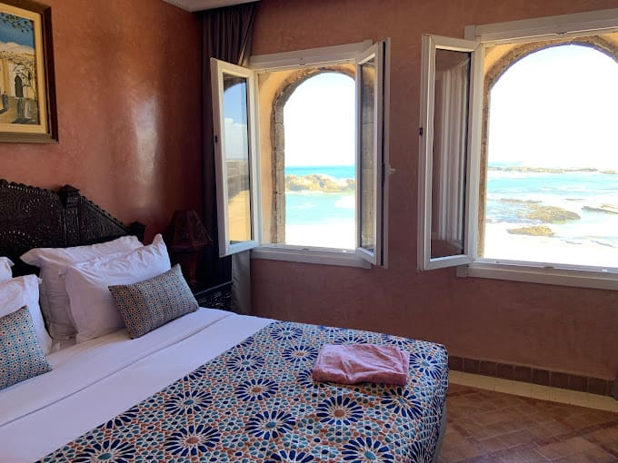
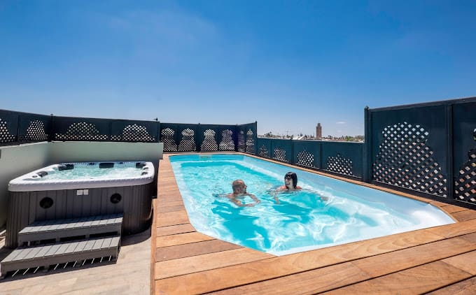

The short answer: Morocco makes an outstanding honeymoon, combining romance, adventure and genuine privacy. The classic honeymoon route spends 9 to 12 days moving from a boutique riad in Marrakech, over the High Atlas, to a private desert camp in the Sahara, then on to Fes or the Atlantic coast at Essaouira. The best seasons are spring and autumn. The experiences couples remember most are a candlelit dinner under desert stars, sunrise over the dunes, a rooftop dinner in the medina and a hammam for two.
Many honeymooners arrive with a beach in mind and leave Morocco wondering why they ever considered one. Few places offer such a range of romantic settings in a single trip: lantern-lit riad courtyards, terraces over ancient medinas, snow on the Atlas, the silence of the Sahara at night, and the Atlantic breeze in Essaouira. Morocco is also easy to reach from North America, and a private itinerary means the trip is shaped entirely around the two of you.
Why Morocco Is So Good for Couples
- Romance with substance. It isn't just a resort. You explore, discover and share experiences that feel like an adventure.
- Intimate places to stay. Riads often have only a few rooms, so it can feel like having a private palace to yourselves.
- Privacy where it matters. With your own driver-guide there's no group, no fixed schedule and no strangers at dinner.
- Variety. City, mountains, desert and ocean can all fit into one honeymoon.
Ten Romantic Experiences Worth Planning Around
- Dinner under the Sahara stars. After a sunset camel ride into the Erg Chebbi dunes, dinner by candlelight and lanterns at a private camp is the moment most couples remember. Read what a desert camp night is like.
- Sunrise from the top of a dune, with nobody else in sight.
- A hammam for two, Morocco's traditional steam bath and scrub, followed by an argan oil massage.
- A rooftop dinner in Marrakech as the call to prayer echoes across the medina.
- A hot-air balloon flight at dawn over the palm groves and villages outside Marrakech.
- A private cooking class to learn the tagine you'll make at home for anniversaries.
- A slow afternoon in the Dades Valley, on a terrace with a view of the gorges.
- Getting lost together in Chefchaouen, Morocco's blue town in the Rif Mountains.
- Seafood and sunset on the ramparts of Essaouira, the relaxed Atlantic port.
- A visit to a women's argan cooperative, to bring home oil made by hand.

Choosing Romantic Places to Stay
Accommodation sets the mood of a honeymoon more than anything else. In Morocco it usually means a mix of three kinds of stay.
Boutique riads in the medinas
A riad is a traditional townhouse built around an inner courtyard, often with a fountain or plunge pool, rooftop terrace and a handful of beautifully decorated rooms. For honeymooners, look for a suite with its own sitting area, a quiet location away from the busiest lanes, and a terrace where dinner can be served. Our riad or hotel guide explains how to choose.
Kasbah hotels in the south
On the road to the Sahara, restored kasbahs and boutique hotels in the Dades Valley and Skoura Oasis offer romantic views of palms, gorges and mountains, often with pools that are ideal after a long drive.
A private desert camp
For a honeymoon, upgrade the desert night. Luxury camps have spacious private tents with proper beds, en-suite bathrooms and hot showers, and many can arrange a private dinner. See our luxury Morocco travel guide for what to expect.

A 10-Day Morocco Honeymoon Itinerary
This route balances discovery with plenty of time to relax, and avoids the long, rushed driving days that can wear down a honeymoon.
- Day 1, Marrakech: Private airport transfer to your riad. A hammam and rooftop dinner.
- Day 2, Marrakech: A private guided morning in the medina and gardens. An afternoon at the riad pool.
- Day 3, High Atlas and Ait Benhaddou: Over the Tizi n'Tichka pass, with a night in the Dades Valley.
- Day 4, into the Sahara: Through the Todra Gorge, then a sunset camel ride to your private desert camp.
- Day 5, the desert: Sunrise on the dunes, a relaxed day, and a second night under the stars.
- Day 6, Skoura Oasis: A gentler drive west to a kasbah hotel among the palms.
- Day 7, back to Marrakech, or straight on to the coast.
- Days 8 to 9, Essaouira: Ocean views, seafood, the ramparts and slow mornings.
- Day 10: Transfer to Marrakech airport.
Our 7-day Grand Sahara tour covers the heart of this route with two desert nights, and the 12-day Grand Circuit adds Fes, Chefchaouen and Essaouira. As a private journey, either can be adjusted with suite upgrades, extra nights or special dinners.

The Best Time for a Morocco Honeymoon
| Season | What to expect | Good for |
|---|---|---|
| Spring (Mar–May) | Warm days, green valleys, comfortable desert nights | The classic route, including the Sahara |
| Summer (Jun–Aug) | Very hot inland, cooler on the coast | Essaouira and the mountains, with short desert visits |
| Autumn (Sep–Nov) | Warm, settled weather and golden light | The full route, and photography |
| Winter (Dec–Feb) | Sunny days, cold nights, snow on the Atlas | Cozy riads and clear desert skies |
Many North American weddings happen in late spring and early autumn, which line up well with Morocco's best seasons. If you're planning a winter honeymoon, read our Morocco in winter guide first.
Practical Tips for Honeymooners
- Mention it's your honeymoon when you book. Riads and camps often add a small touch, and we can plan surprises like a private dinner.
- Public affection: Morocco is a conservative country. Holding hands is fine, but keep anything more for your riad.
- Room types: Ask specifically for a double bed. Many rooms are set up as twins unless requested.
- Pace: Build in at least one slow day for every two or three busy ones.
- Budget: Our private tours are priced per person in a double room, with the price published on each tour page. Upgrades such as a luxury desert camp or a suite are quoted separately. See our guide to private tour costs.
Begin Your Life Together in Morocco
A Moroccan honeymoon should feel effortless and completely yours. Tell us your dates and the kind of moments you're dreaming of, and our team will design a private honeymoon itinerary with riads, camps and experiences chosen for the two of you. You can also start from our tailor-made trips.